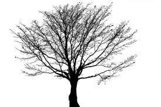
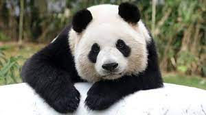

EXTINCION EN EL MAR
Los seres humanos estamos recogiendo lo que nuestros ancestros han sembrado en cuanto al cuidado de nuestro planeta tierra se refiere. Estamos recogiendo lluvias extremas, días calurosos y secos, y sobre todo la desaparición de miles de especies de animales y plantas.

Con situaciones como la caza indiscriminada de animales, la quema y la tala de bosques enteros, muchos son los animales que no podrán tener hogar y sobre todo, no podrán multiplicarse. Así es ahora el panorama que nuestro planeta puede mostrarnos.
CUANDO SE CONCIDERA UNA ESPECIEN EN PELIGRO DE EXINCION?
Se considera en peligro de extinción a una especie animal cualquiera, cuando su existencia y reproducción no se puede desarrollar en ninguna parte del mundo. Es decir que ya nunca se podrá volver a ver.

Esto es debido generalmente a la terminación de un recurso del cual dependen todas y cada una de las especies, ya sea por acción del hombre, como la caza ilegal o la tala de indiscriminada de árboles, o simplemente por cambios en el ecosistema de la especie que son fruto de hechos fortuitos, como lo es el cambio climático.